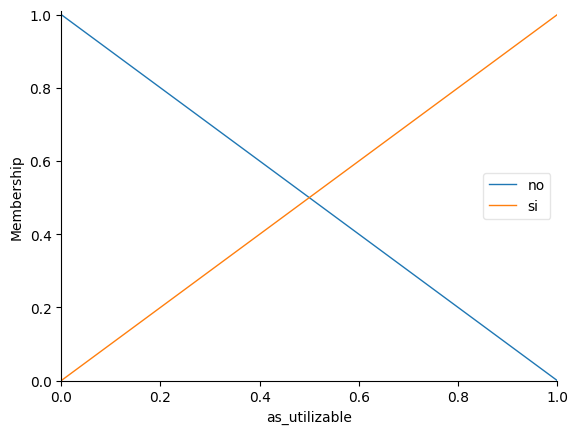
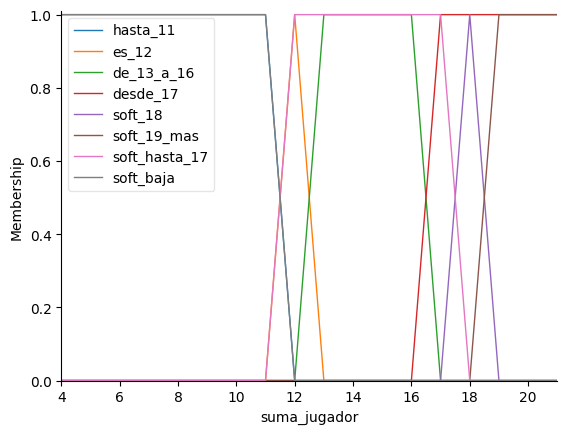
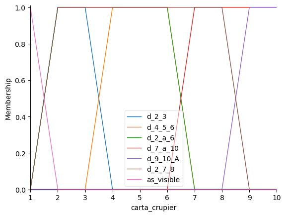
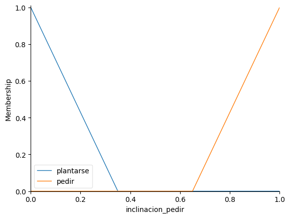
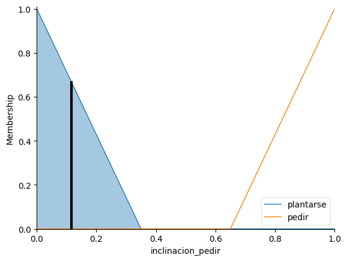

> ALUMNO: Fernando Rosales
> MATERIA: Cómputo Suave
> DOCENTE: Gustavo Omar Zamarrón de la Garza
> FACULTAD: FCQI
> TARGET: Blackjack-v1 (Gymnasium / Toy Text).
Razón de la elección:
El entorno nos entrega una tupla de 3 observaciones:
> MISSION: Simular el juego de Veintiuno.
El jugador debe acercarse a 21 sin pasarse, para ganarle a la casa.
Acciones Disponibles:

| Término | Función | Justificación |
|---|---|---|
| hasta_11 | Triangular | Mano baja, pedir no tiene riesgo. |
| es_12 | Triangular | Punto crítico. Decisión difícil. |
| de_13_a_16 | Triangular | Zona roja de alto riesgo. |
| desde_17 | Triangular | Mano fuerte, preferible plantarse. |
*Se usan funciones triangulares/trapezoidales para asegurar un traslape continuo tipo Mamdani.

Términos como d_4_5_6 o d_9_10_A segmentan la probabilidad de que la casa se pase de 21 o consiga una mano invencible.

Términos no y si (Triangulares puntuales). Variable discreta binaria que cambia completamente el estilo de juego.
plantarse [0 a 0.35]pedir [0.65 a 1]Razón: El centro de gravedad pondera todas las reglas disparadas en un único valor proporcional. Posteriormente, el sistema aplica un umbral estricto en 0.5 para elegir la acción discreta (0 o 1) del entorno.

16 Reglas basadas matemáticamente en la Estrategia Básica de casino.
| SI... | Y Crupier... | ENTONCES | Razón |
|---|---|---|---|
| Suma es 12 | tiene 4, 5 o 6 | Plantarse | La casa tiene altas chances de bust. |
| Suma 13-16 | tiene 7 a 10 | Pedir | Debemos forzar para no perder contra carta alta. |
| Suma (17+) | (Cualquiera) | Plantarse | Riesgo inaceptable de pasarse. |
> EXECUTING: Jugador tiene 12, Crupier muestra un 5.
obs = Observacion(suma=12, crupier=5, as_util=0)
accion, centroide, _ = inferir_accion(sim, obs)
# >>> Centroide calculado = 0.1167
# >>> 0.1167 < 0.5 --> STICK

Al activarse la regla HD3, la inclinación a pedir se desploma hacia el extremo izquierdo, demostrando la eficacia del crupier débil.
--- Episodio 2 ---
paso 0: suma=5, crupier=5, as_util=0 | centroide=0.883 -> HIT
paso 1: suma=16, crupier=5, as_util=1 | centroide=0.883 -> HIT
paso 2: suma=12, crupier=5, as_util=0 | centroide=0.117 -> STICK
resultado: GANO (recompensa=1.0)
--- Episodio 3 ---
paso 0: suma=12, crupier=As, as_util=0 | centroide=0.883 -> HIT
paso 1: suma=17, crupier=As, as_util=0 | centroide=0.117 -> STICK
resultado: EMPATE (recompensa=0.0)
>_ EVALUACIÓN: 5000 EPISODIOS
Reflexión Final:
Alcanzar un 42.7% de victorias demuestra que el FIS capturó matemáticamente la Estrategia Básica (cuyo límite teórico es idéntico). El desafío principal fue adaptar un universo discreto (cartas enteras) a conjuntos difusos sin dejar "huecos" lógicos, obteniendo como resultado un controlador robusto y eficiente.